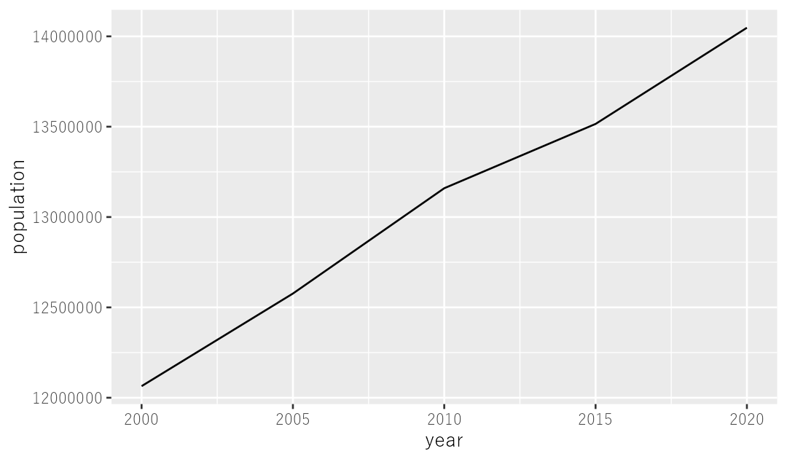
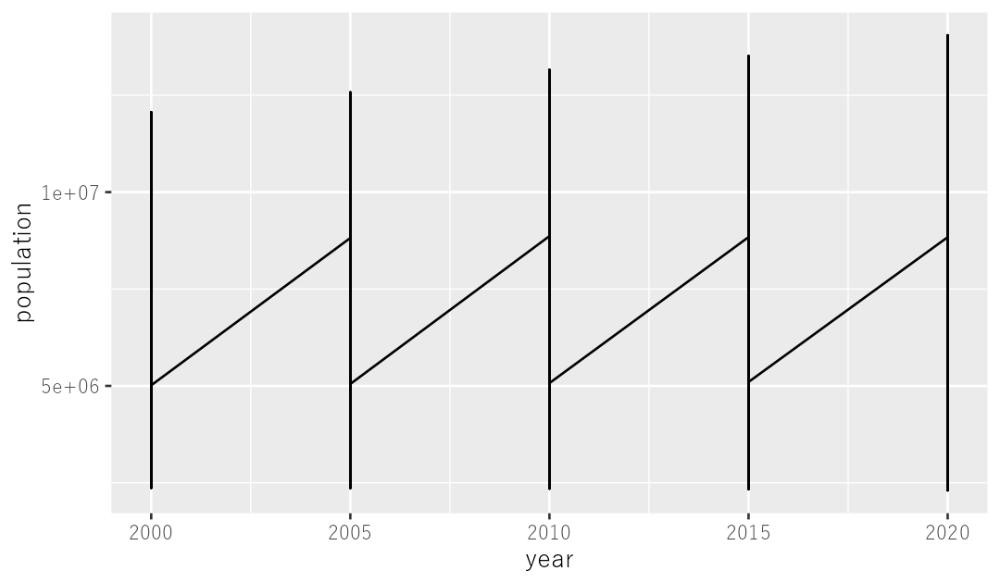
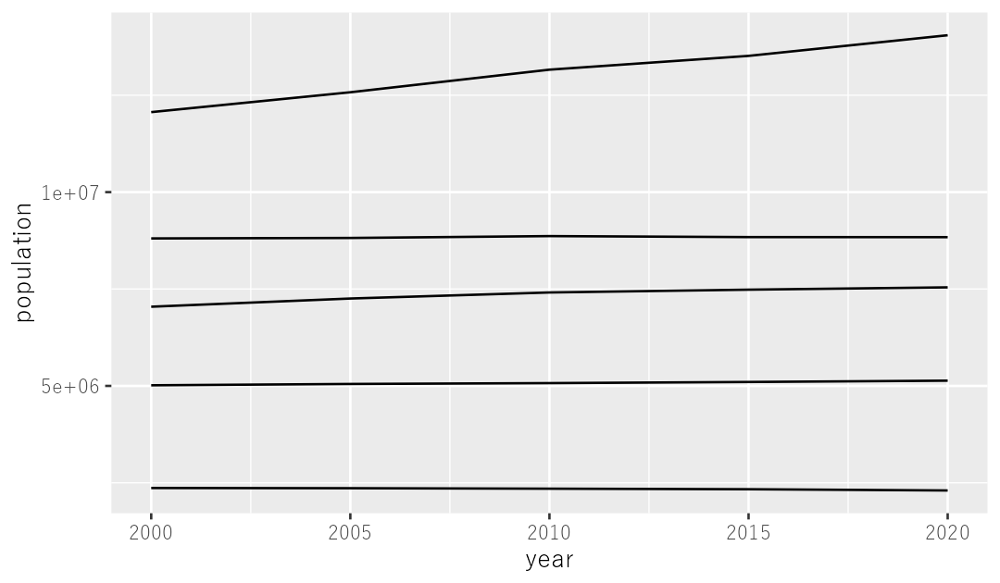
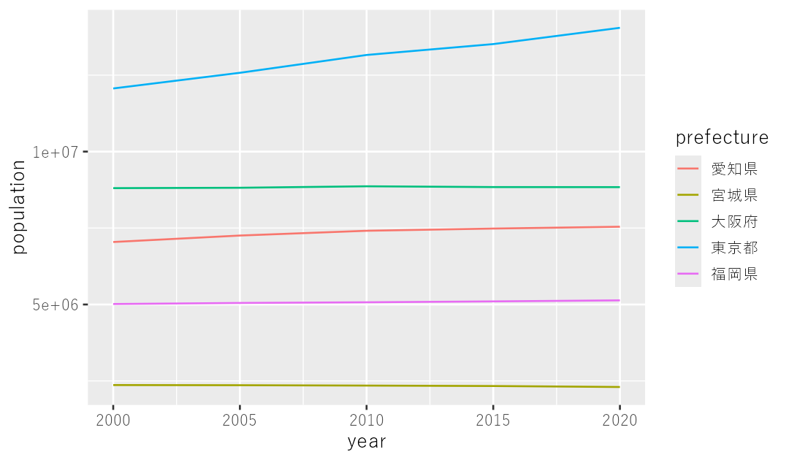
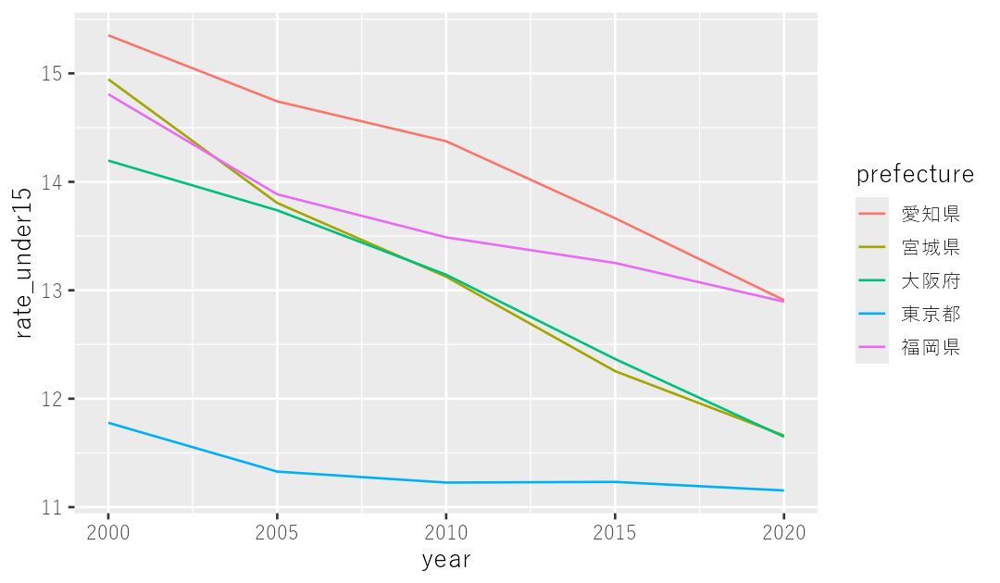

第2部 データを見る
折れ線グラフ
ggplotの基本はここで全部出てきます。キャンバスを用意して、どのデータをどう描くかを指示する。それだけです。
さていよいよ、グラフをつくることによるデータの可視化をしていきましょう。グラフはデータに何が隠されていたのか、そこからどんなメッセージを引き出しどんな記事が書けそうなのかを知る道具であり、また分析や集計の結果を同僚に伝える媒体でもあります。
グラフには円グラフやヒートマップなどさまざまなものがありますが、ここでは基本となる折れ線グラフと棒グラフ、散布図についてやっていきます。たった3種類？ そう思われるかもしれませんが、この三つさえできるようになれば大半の用途には足りてしまいますので、問題ありません。
まずはキャンバスを用意する
ではまずデータの読み込みから。東京都の人口データを tokyo というtibbleに格納しましょう。
tokyo <- read_csv("data/東京都の人口.csv")ではこれを、グラフを描くための ggplot という関数にかけていきます。こんなふうにやります。
tokyo %>%
ggplot()おっ、右下のPlotsというタブに、何か出てきましたね。でも灰色に塗りつぶされただけで、グラフは描かれていません。というのも、tokyo というtibbleをもとにグラフを描く準備はできたのですが、どのデータをどんなふうに可視化しなさいという具体的な指示がないからです。今のところはグラフを描くためのキャンバスができただけ、と考えてください。
何をどう描くかを指示する
では、具体的な指示とはどんなものか。こんなのです。
tokyo %>%
ggplot() +
geom_line(aes(x = year, y = population))
はい、これでグラフが描けました。横軸に年、縦軸に人口をとった折れ線グラフです。なぜこういうグラフになるのでしょうか。
ggplot という関数のあとに、geom_line というのが来ていますね。これはline、つまり折れ線グラフを描きなさいという指示で、丸括弧のなかにはさらに aes() というのがあって、その丸括弧のなかでxとyがそれぞれ指定されています。xが year なのでx軸つまり横軸に年がとられ、yが population なのでy軸つまり縦軸に人口がとられている、というわけです。
geomとかaesとか、いろいろややこしいと思われるかもしれませんが、これは我慢して覚えてください。でもggplotではいつもこれを使うので、慣れれば手が覚えてしまいます。
ちなみにgeomはgeometry、つまり「幾何的な」の略で、aesはaesthetic、つまり「美的な」とか「視覚的な」とかを意味することばの略、らしいです。でもまあ、繰り返しになりますが、これは難しく考えずに覚えてしまってください。
線を増やす
ところで、折れ線グラフが描けたのはいいんですが、線が一本だとなんだか寂しいですね。せっかくなので、もうちょっと増やしてみましょう。というわけで、主な5都府県のデータを読み込んで、five_pref というオブジェクトに保存します。
five_pref <- read_csv("data/主な都道府県の人口.csv")これをさっきと同じコードにかけてみると、どうなるでしょうか。
five_pref %>%
ggplot() +
geom_line(aes(x = year, y = population))
5都府県あるので、線が5本の折れ線グラフにしたかったのですが、そうはなってくれませんでした。すべてのデータが1本の線でつなげられてしまったからです。ジグザグの、意味のよくわからない図になったはずです。
それぞれのデータを都府県ごとにグループ化したうえで折れ線として表示してもらうためには、こんなコードを書きます。
five_pref %>%
ggplot() +
geom_line(aes(x = year, y = population, group = prefecture))
うまく行きました。group = prefecture という部分で、都府県ごとにグループ化してくださいね、と指示しているわけです。
色分けする
ただ、全部同じ色なので、どの線がどの都府県に対応しているのか、分かりません。色分けしてみましょう。こんなコードです。
five_pref %>%
ggplot() +
geom_line(aes(x = year, y = population, color = prefecture))
うまく色分けできました。右側に凡例も表示されていますね。このコードでは color = prefecture という部分で、都府県ごとに色分けしてくださいね、という指示を出しています。こうすれば、グループの分け方を別途指示する必要はなくなります。
比率にして眺めてみる
で、色分けできたのはいいですが、それぞれの人口を表示しているだけで、あまりおもしろくありません。少しだけ「分析」っぽいことがしたい。たとえば各都府県の子どもの割合を出してから、これを折れ線グラフにしてみましょう。こんなコードです。
five_pref %>%
mutate(rate_under15 = population_under15 * 100 / population) %>%
ggplot() +
geom_line(aes(x = year, y = rate_under15, color = prefecture))
mutate 関数を使って子どもの割合を示す列を作ってから、そのままパイプ演算子でつないでggplotになだれ込んでいます。これまでは縦軸に人口をとっていましたが、今回は y = rate_under15 というところで子どもの割合を縦軸にとるように指示しています。こういうやり方なら、もととなるtibbleを変えないままでいろいろなグラフを作ることができます。
次は棒グラフです。